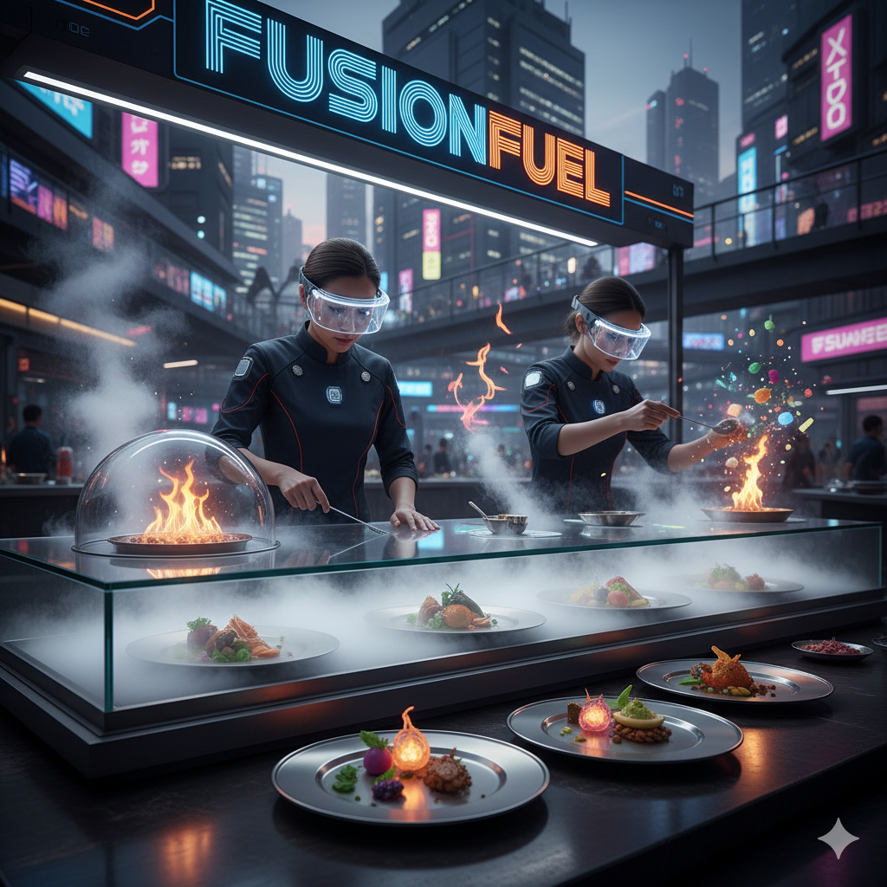
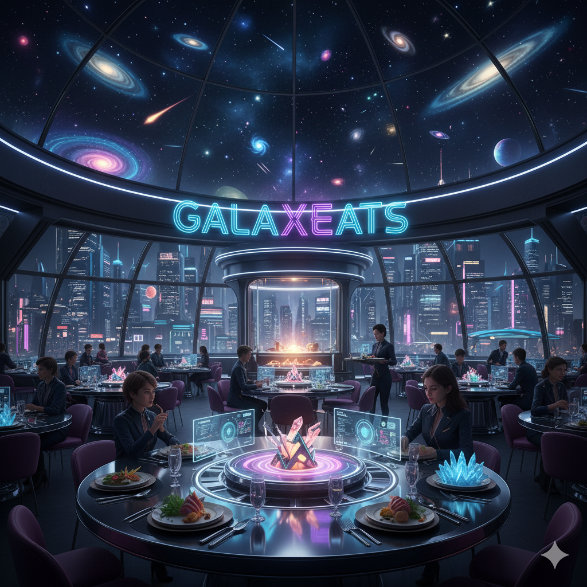
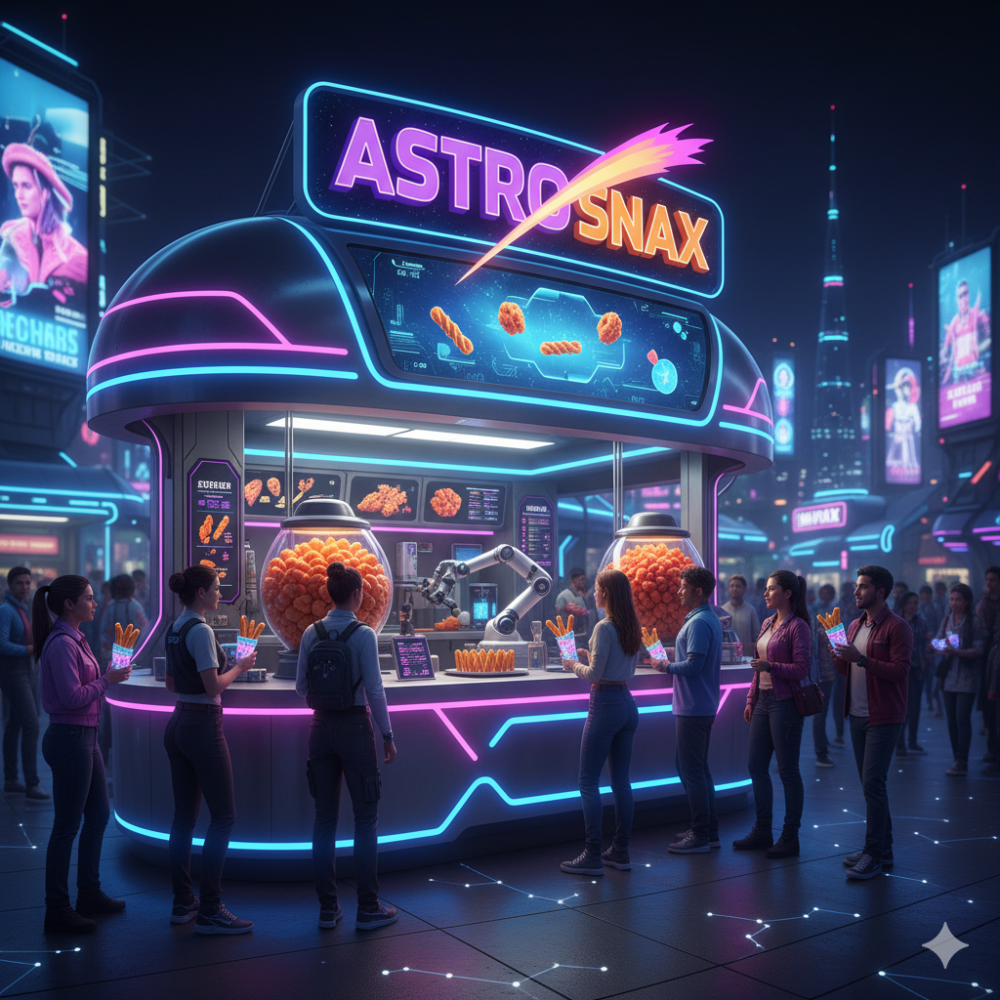

At FusionFuel, the line between science and cuisine blurs. Streams of mist rise from glass counters as chefs in luminous visors craft hybrid dishes that bend tradition and technology. Flames dance in display domes, flavors ignite in midair, and each plate fuels visitors with the energy of tomorrow.

At the heart of NeoPark stands GalaxEats, a glowing dome where the universe is served on a plate. Inside, holographic stars drift across the ceiling as diners taste flavors from every corner of time and space. From futuristic fusion meals to reinvented classics, GalaxEats offers everything — a cosmic dining experience that turns every meal into a journey through the stars.

Quick, bold, and out of this world — AstroSnax serves handheld bites designed for explorers on the move. From meteor puffs to cosmic churros dusted with “stardust” sugar, every snack delivers a burst of flavor that fuels your next adventure through NeoPark.